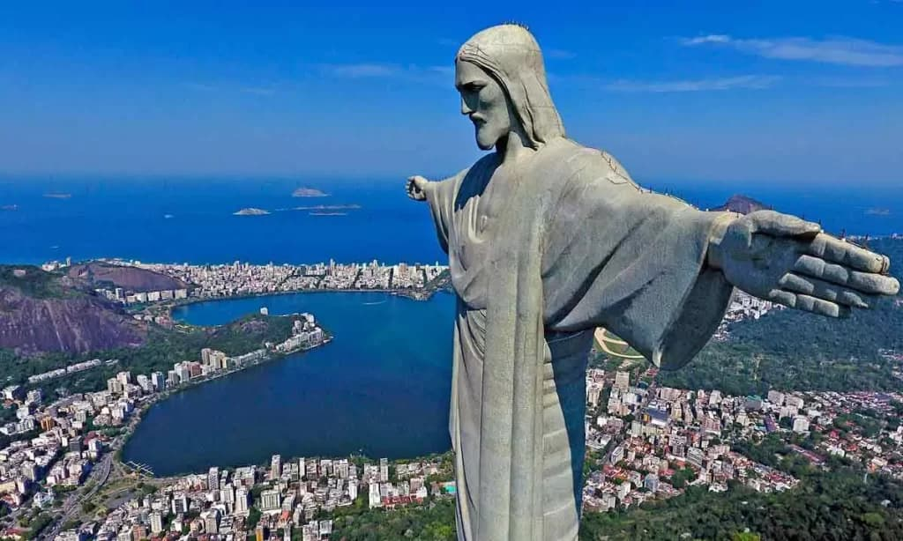
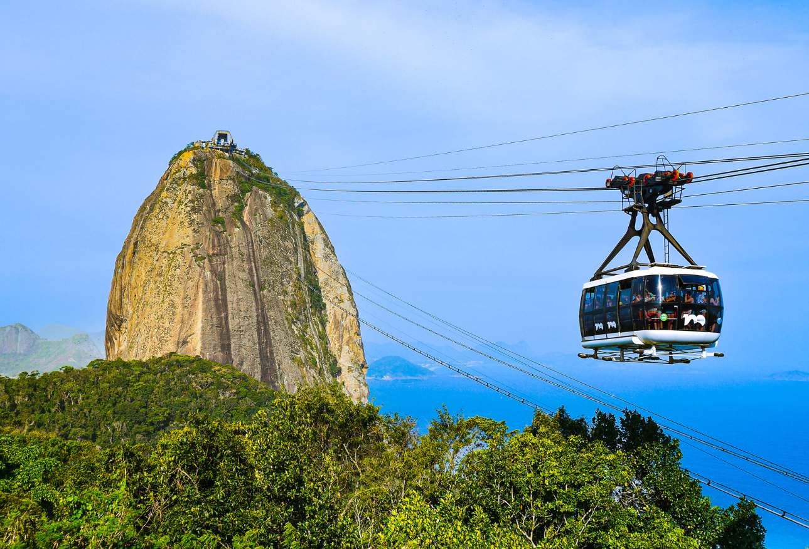
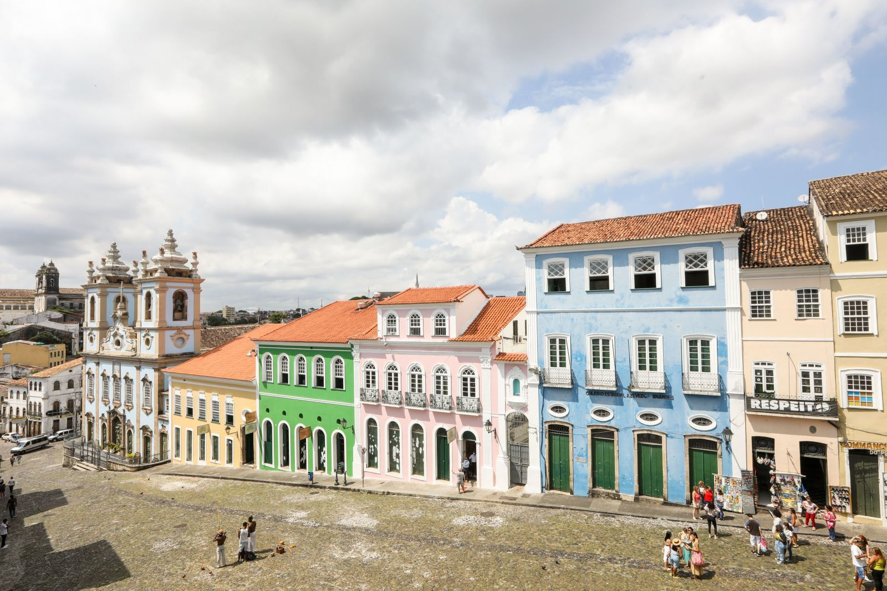

Descubra nosso Brasil e seus destinos incríveis para uma viagem satisfatória.

Uma natureza e história rica definem o Brasil. Não apenas por seu tamanho, mas também por sua diversidade cultural e natural.
Chapada Diamantina
A Chapada Diamantina é um local conhecido por sua beleza inigualável. Junto a suas ótimas opções de hotéis e restaurantes, além de guias de viagem.
A Chapada e seus pontos turísticos estão fortemente interligados com o ecoturismo. Com cachoeiras naturais para visitar. Junto ao incrível Vale do Pati.

Bondinho Pão de Açúcar
Se divirta no primeiro teleférico do Brasil por um passeio inesquecível pelo Pão de Açúcar.
O Bondinho se destaca com sua vista, que demonstra tudo que há de belo no Rio de Janeiro. Sendo uma vista única a cada viagem qur traz um pouco da cultura Brasileira.

Pelourinho Salvador
Dê um passeio por Pelourinho. Do Centro histórico de Salvador (Bahia) se destaca por seus casarões coloridos, restaurantes típicos e forte cultura afro-brasileira.
Pelourinho se destaca por ser um patrimônio mundial. Símbolo da força e presença da cultura Brasileira. Além de suas igrejas de estilo barroco.